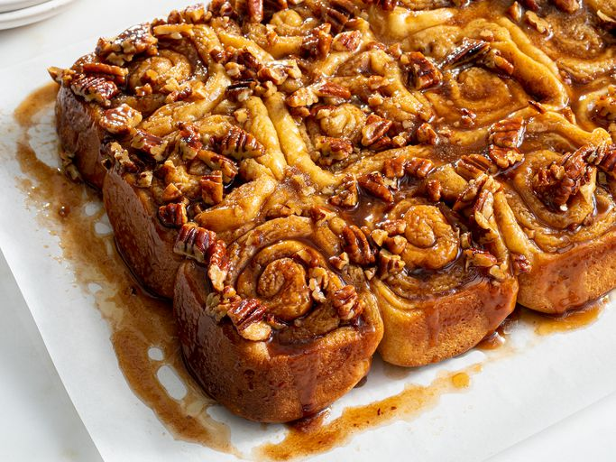

Cinnamon Buns

Simple to make gooey cinnamon buns!"
These cinnamon buns are soft and tender
and topped with a sticky glaze. They'll fill your
kitchen with a sweet aroma. So good when they're
gooey and warm!
What You Will Need:
- 0.5 cup warm water (110 degrees F/45 degrees C)
- 1 teaspoon white sugar
- 1 package active dry yeast
- 0.5 cup milk
- 0.25 cup white sugar
- 0.25 cup unsalted butter
- 1 teaspoon salt
- 2 large eggs, beaten
- 4 cups all-purpose flour
Directions:
- Make the dough: Pour water into a liquid measure. Add 1 teaspoon of sugar
and active dry yeast; stir until dissolved. Let stand until foamy, about 10
minutes.
- Meanwhile, warm milk in a small saucepan over medium heat until it just
starts to bubble around the edges; do not boil. Remove from the heat and stir
in 1/4 cup sugar, 1/4 cup unsalted butter, and salt until melted. Let cool until
lukewarm.
- Lightly whisk eggs in a large bowl. Add yeast mixture, lukewarm milk mixture,
and 1 1/2 cups flour; stir until well combined.
- Mix in remaining 2 1/2 cups flour (1/2 cup at a time), mixing well after each
addition, until dough comes together.
- Turn dough out onto a lightly floured surface and knead until smooth, silky,
and elastic, about 8 minutes.
- Place dough in an oiled bowl and turn to coat with oil. Cover with a damp
cloth and let rise in a warm place until doubled in volume, about 1 hour.
- While the dough is rising, make the glaze: Melt 3/4 cup of unsalted butter in a
small saucepan over medium heat. Add 3/4 cup brown sugar and whisk until smooth.
- Grease a 9x13-inch pan. Pour glaze mixture into the pan; sprinkle pecans over
top.
- Make the filling: Place 1/4 cup melted butter in a small bowl. Combine 3/4 cup
of brown sugar, pecans, and cinnamon in a separate bowl.
- When the dough has doubled in size, turn it out onto a lightly floured surface.
Roll into a 14x18-inch rectangle. Brush 1/2 of the melted butter over the
dough, leaving a 1/2-inch border unbuttered. Sprinkle brown sugar mixture
over top.
- Start at the long edge and roll the dough tightly, pinching the seams to seal.
Brush remaining butter over the dough. Cut dough into 15 equal rolls.
- Place rolls, cut-sides down, into the glaze in the prepared pan. Cover and let
rise until double in size, about 1 hour.
- Preheat the oven to 375 degrees F (190 degrees C).
- Uncover and bake in the preheated oven until golden brown, 25 to 30 minutes.
- Let cool in pan for 3 minutes, then invert onto a serving platter so the glaze is
on top. Scrape any remaining glaze from the pan onto the rolls.